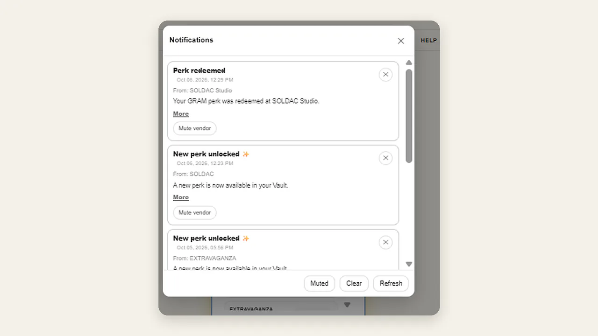

Notificações
O que significam as notificações, onde as ver e como diferem das transferências.
O que são notificações
As notificações são atualizações de atividade relacionadas com a sua conta GRAM e a sua coleção. Podem indicar mudanças, lembretes ou ações que podem exigir a sua atenção.
Onde ver notificações
Pode vê-las no inbox ou na área de notificações da plataforma.
Notificações vs transferências
Uma notificação é uma atualização. Uma transferência é uma ação específica de propriedade. Alguns eventos de transferência podem aparecer como notificações, mas não são a mesma coisa.
Guia visual
